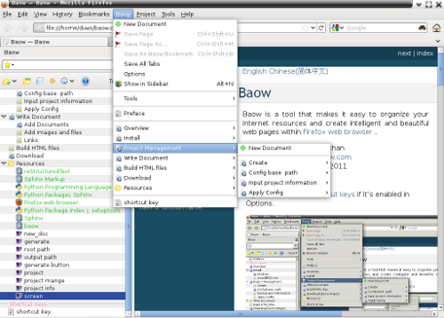

|
|
English 简体中文 |
Baow is a document editor that makes it easy to organize your plain text documents and web resources, and then create intelligent and beautiful web pages within Firefox web browser .
Author: Cyrus Baow Contact: cy2081@baow.com Version: 3.1 (2012-05-07) Download: here 
Highlights :
- Tree based outline, help you organize internet resources and documents.
- Save or bookmark web images, files or pages.
- Multi level project management.
- Full text search.
- Write Sphinx Markup (reStructuredText) documents and generate web pages by Sphinx tools.
- Easily configure and build documents.
- Automatic create section headers level, no marker characters.
- Lots of quick menus, help you write and preview Sphinx Markup documents.
- Gvim and Emacs editor support.
- Multi platform support, Windows, Linux, Mac etc.